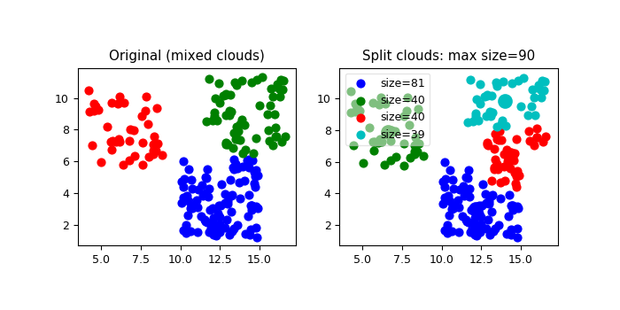

3.5.6.25. test_regrid_kriging_cloud_split.py – Test function cloud_split()¶

"""Test function :func:`~vacumm.misc.grid.kriging.cloud_split`"""
nps = [100, 60, 40]
npmax = 90
dxy = 5
from vcmq import P, simple_colors, savefigs, code_file_name, N
from vacumm.misc.grid.kriging import cloud_split
# Input clouds
xx = []
yy = []
P.figure(figsize=(7, 3.5))
P.subplot(121, aspect=1)
colors = simple_colors[1:]
for i, np in enumerate(nps):
xc = P.rand(1)*dxy*2.5
yc = P.rand(1)*dxy*2.5
x = P.rand(np)*dxy+xc
y = P.rand(np)*dxy+yc
xx.extend(x)
yy.extend(y)
P.scatter(x, y, c=colors[i:i+1], s=40)
P.title('Original (mixed clouds)')
# Spliting
indices, centroids = cloud_split(xx, yy, getdist=False, getcent=True, npmax=npmax)
# Plot
P.subplot(122, aspect=1)
xx = N.array(xx)
yy = N.array(yy)
msize = 0
for i, select in enumerate(indices):
x = xx[select]
y = yy[select]
P.scatter(x, y, c=colors[i:i+1], s=40, label='size=%i'%len(x))
P.scatter(centroids[i:i+1, 0], centroids[i:i+1, 1], c=colors[i:i+1], s=100, lw=2)
msize = max(len(x), msize)
P.legend(loc='upper left').get_frame().set_alpha(.5)
P.title('Split clouds: max size=%i'%npmax)
savefigs(code_file_name(ext='png'), pdf=True, verbose=False)
#P.tight_layout()
P.close()
# For unitest
result = {'assertLess':[msize, npmax]}